교육할 내용
- 교안팀 구성과 역할 분담: CEO · CTO · 마케터 · 디자이너 · 개발자
- 교안ESG 문제 발굴: 산업 안전, 시각장애인 접근성, 지역사회 불편 중 하나를 골라 문제 정의
- 교안AIoT 창업 아이템 스케치: 제품명, 해결할 문제, 사용자, 핵심 기능 3가지, 들어가는 기술
- 주영욱 대표이 수업의 핵심은 사실상 1차시에 다 들어 있다. 여기서 나온 스케치가 12차시 내내 이어진다
주의점
- 주영욱 대표‘1분 안에 팀 이름·역할 정하기’, ‘5분 안에 팀 결성’은 현장에서 안 된다. 시간 제한은 무시해도 된다
- 주영욱 대표교안 순서대로 가지 말고 팀부터 짠다. 역할을 정한 뒤에 마시멜로 탑을 쌓는다
- 주영욱 대표‘조사해 봐’라고만 하면 학생들은 못 한다. 문제·대상·누가 겪는지 항목을 주고 생성형 AI로 조사하게 한다
중요한 점
- 주영욱 대표마시멜로 탑 = 사업의 구조. 자금이 부족하거나 아이템이 약하면 탑이 무너진다는 비유로 진행한다. 학생들이 좋아하니 시간을 넉넉히 준다
- 주영욱 대표스케치는 종이보다 생성형 AI로 원하는 모습을 그리게 한다 (손으로 그리고 싶은 학생은 그대로 둔다)
- 주영욱 대표포스트잇·흰 판을 준다. 흰 판은 버리지 말고 나중에 결과물 밑판으로 쓴다
주영욱 대표 코멘트
주영욱 대표이걸 사업의 구조라고 생각하고 탑을 만들어 보라고 했어요. 자금이 부족하거나 아이템이 안 좋으면 어떻게 되는지, 쌓는 방식으로 평가하는 거죠. 통화 02:11
주영욱 대표1분 동안 팀 이름은커녕 팀 구성 역할도 못 정해요. 이런 건 싹 무시하시면 될 것 같아요. 저는 팀 구성부터 먼저 하라고 했어요. 통화 04:16
주영욱 대표학생들이 그냥 ‘확인해 봐’ 하면 못 하거든요. 문제·대상·누가 겪었는지를 가지고 저는 생성형 AI를 쓰게 했어요. 통화 05:32
주영욱 대표아이템 스케치까지 한 시간 만에 끝난다고 하는데, 해 보니까 1~2시간 걸려요. 통화 07:16
주영욱 대표종이에 쓰는 것보다 생성형 AI로 자기가 원하는 모습을 스케치하게 하는 게 좋을 것 같아요. 통화 07:48
교안 장표 15장 · 코멘트 7곳

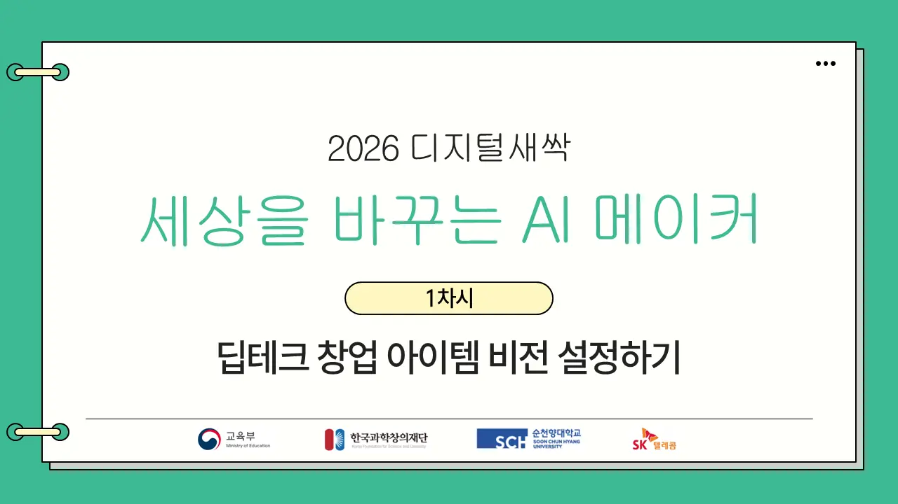

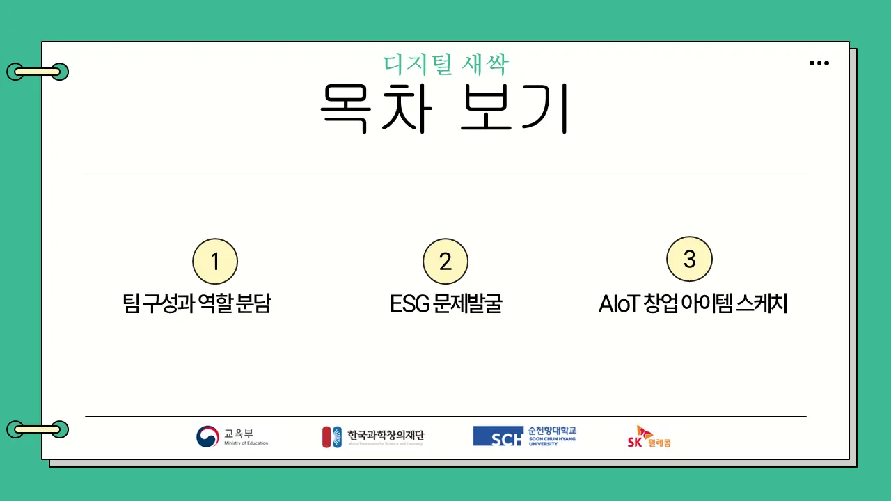

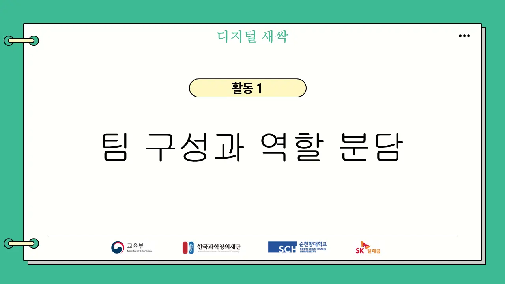

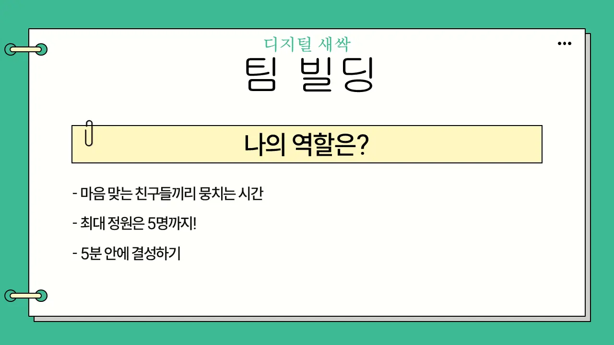
주영욱 대표‘5분 안에 결성’은 무리. 첫 시간에 팀부터 짠다.

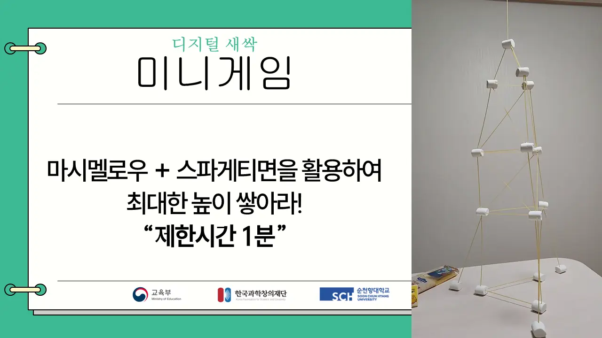
주영욱 대표사업의 구조를 쌓는다는 비유로. 학생들이 좋아하니 1분 제한 대신 시간을 넉넉히.

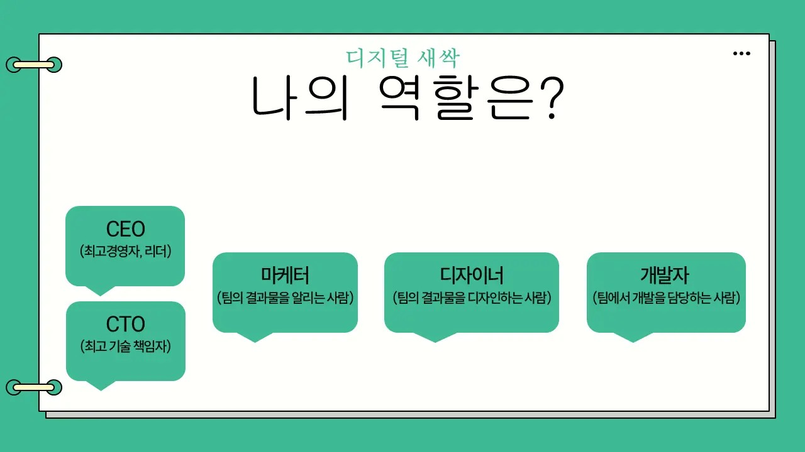
주영욱 대표역할을 먼저 정하고, CEO가 지휘해서 탑을 쌓게 한다.

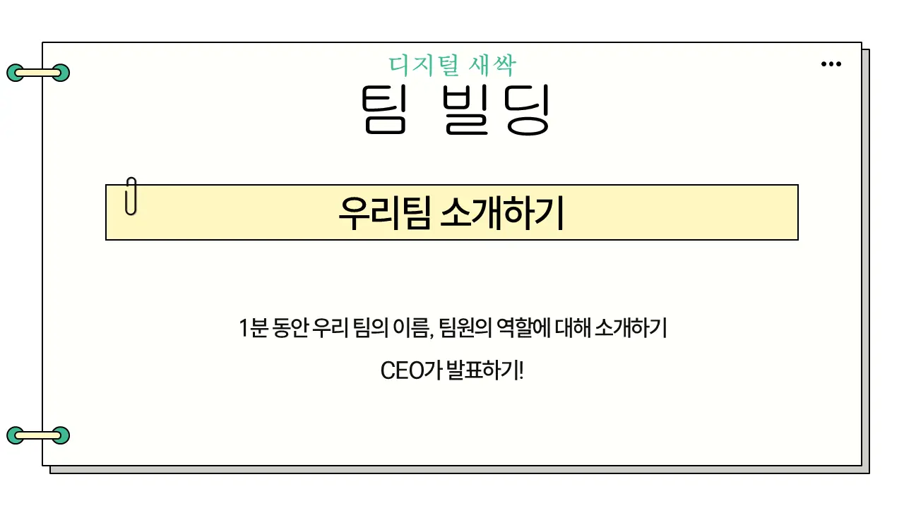
주영욱 대표1분 소개는 시간 제한 무시.

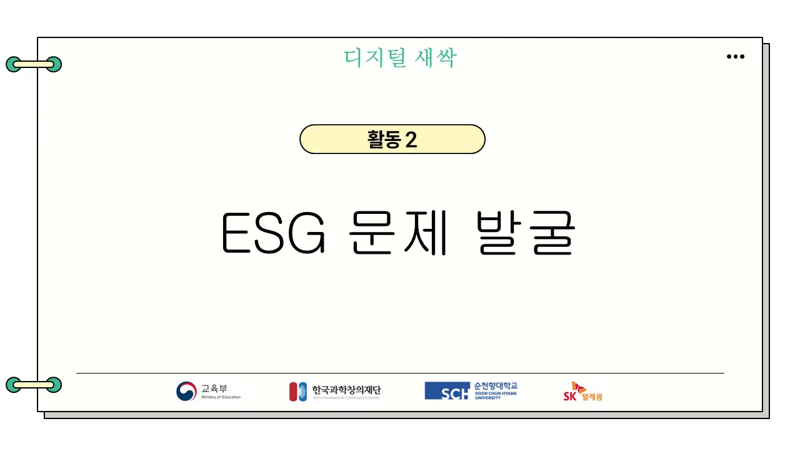

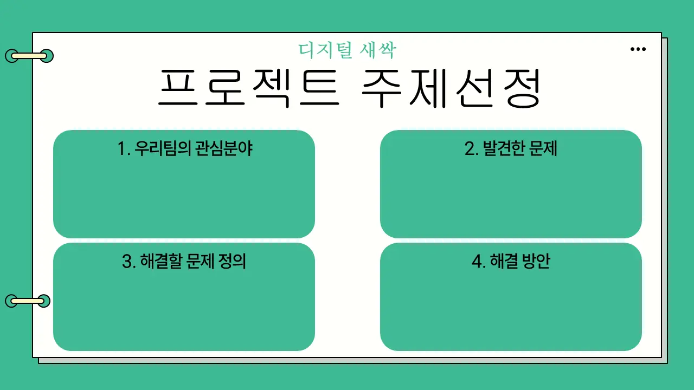

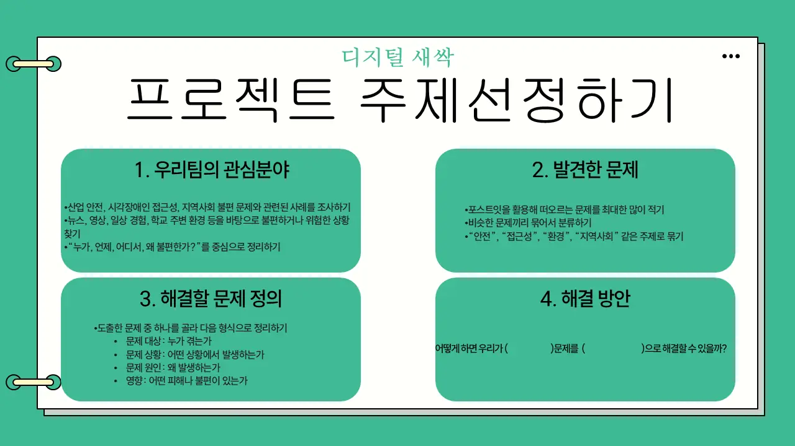
주영욱 대표주제 조사는 생성형 AI로. 태블릿·노트북을 쓰게 한다.

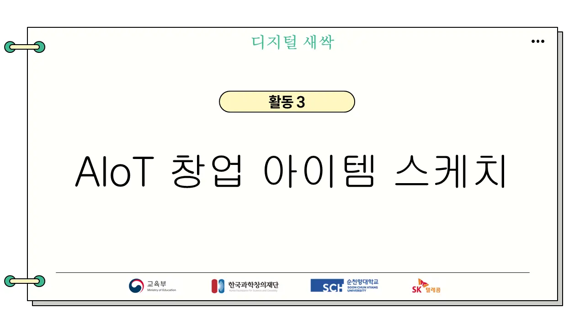

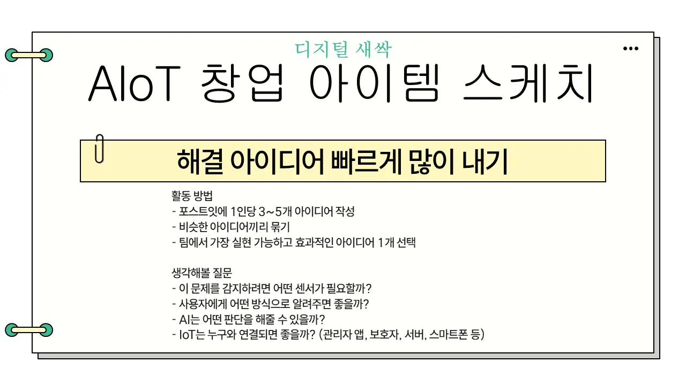
주영욱 대표포스트잇 묶기는 패들렛처럼. 흰 판은 나중에 결과물 밑판으로 재활용.

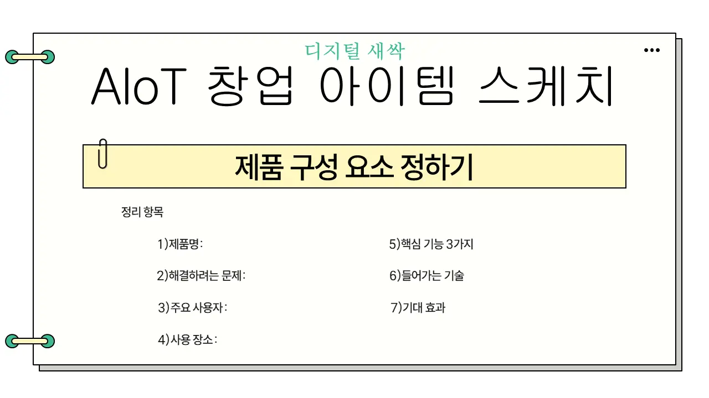

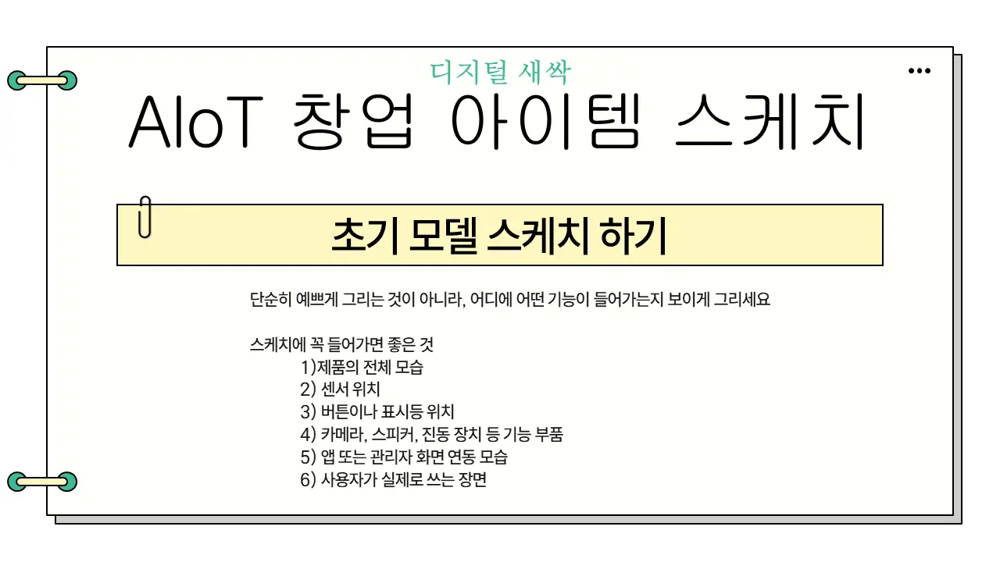
주영욱 대표종이 대신 생성형 AI로 스케치해도 된다.

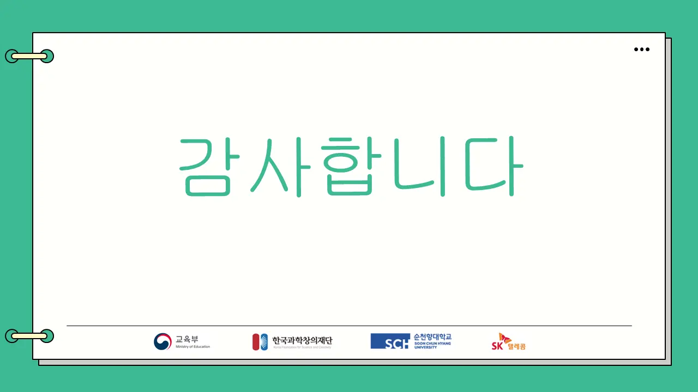